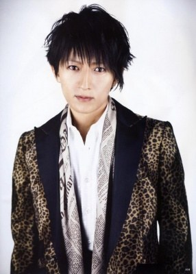

Biographie de TETSUYA
Biographie
Tetsuya Ogawa est un chanteur et bassiste japonais, né le 03 octobre 1969 à Osaka. Il est aussi le leader du groupe de JROCK L'Arc~en~Ciel.
Tetsuya est le leader et le créateur du groupe. Il est reconnu pour son style mélodique à la basse. Dans de nombreuses chansons, la basse de Tetsuya joue en contre-mélodie avec la guitare de Ken, enrichissant les mélodies.
Ses compositions sont dans un style plus pop que celles de Ken qui sont plus lourdes, parfois avec des tendances blues. Son jeu utilise fréquemment des slides ainsi que des hammer-ons/pull-offs.
- Nom réel : 小川哲也 (Ogawa Tetsuya)
- Nom alternatif : TETSU69
- Nationalité :

- Genre : Homme
- Date de naissance : 03/10/1969
- Genre / métier : J-Rock, J-Pop, Compositeur
- Appartient au groupe : L'Arc~en~Ciel (en activité) (Leader, Basse, Choeurs) (1991 -)
Profil
Surnoms : Tetsu, Tecchan, Tet-chan
Groupe sanguin : A
Signe astrologique : Balance
Rôle dans L'Arc~en~Ciel : leader, bassiste, chanteur (seconde voix), compositeur, auteur
Auteur et/ou compositeur : Link, Ready Steady Go, Finale, Driver's High, Pieces, Sunadokei...
Carrière solo : TETSU69 renommé tetsu depuis novembre 2006, puis TETSUYA (chanteur), Creature Creature (bassiste)
Hobbies : shopping, voyager, anime (Gundam, Neon Genesis Evangelion)
Marque de cigarettes : ne fume pas
Couleurs favorites : rouge. Mais comme il le dit dans le Tetsugaku (son livre) il n'aime pas tous les types de rouges. Par exemple, il n'aime pas le rouge de la ferrari (c'est pour ça que la ferrari qu'il possède est bleu). Il préfère un rouge assez clair, tendant vers la couleur saumon.
Nourriture préférée : nourriture japonaise (surtout le Sushi), bananes
Marque de vêtements : vêtements de marques diverses, un goût prononcé pour les jupes écossaises et les écharpes, Hysteric Glamour
Rêve d'enfant : être un pilote de F1
Famille : parents, 2 jeunes soeurs, marié à Ayana Sakai